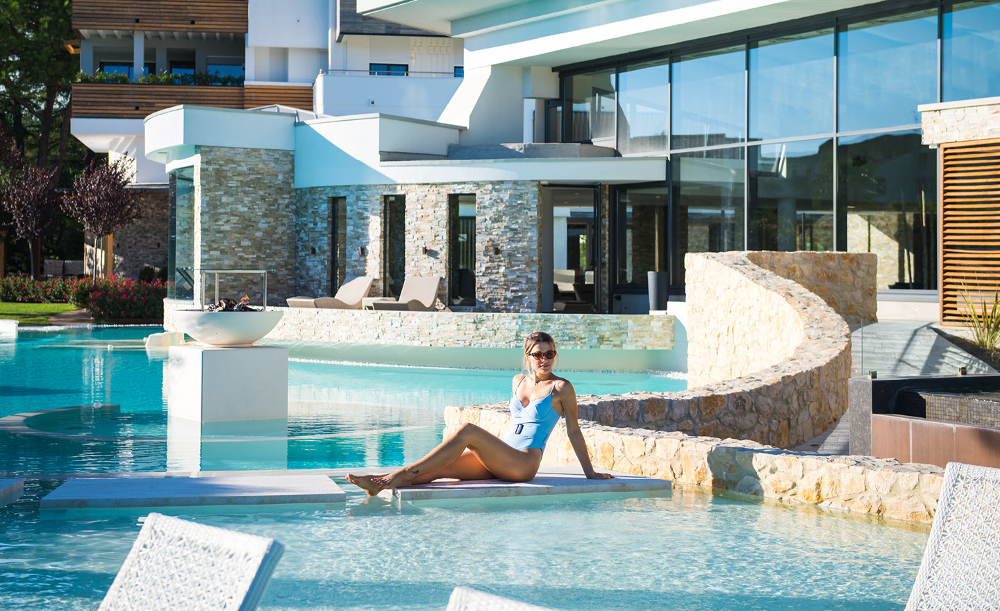

首选 · 质感最好最均衡的选择是工作日去 Esplanade Tergesteo，按个人需要加 50 分钟 massage，但不必全员都买昂贵的 Suite Day Spa；如果想要更安静又省预算，选成人限定的 Relilax；如果有人最需要一间房躺平，选 Mioni Royal San Full Spa Day。
建议日期
优先放在周一至周四，例如 9月24日。避开周末不仅更便宜，也更安静。三家都需要确认名额；泳帽常为必需品，最省事是现场买或提前装进行李。
三家，不是三十家
排序更看重成人氛围、空间质感、是否真的能休息，以及四个人能否选择不同疗程，不按池子数量排序。


舒服版本的一天
以 Esplanade 15:00 左右按摩为例。不要把 spa 日变成“上午还得先完成一个景点”。
轻午餐
Torreglia 吃清淡一点，不喝太多酒；装泳衣、泳帽和换洗衣服。
先泡池
报到后先在室内外温泉池慢慢适应，不急着打卡每个水疗区。
50分钟按摩
选 relaxing；除非真想体验当地传统，否则不需要第一次就做泥疗疗程。
晚餐看状态
舒服就留到晚一点；饿了回 Torreglia。当天不再安排酒庄或古村。
RoofTop54 要不要加？
天气好、全家确定会待到日落，就值得；阴雨或很疲惫时不值。它是 adults-only 的 panoramic spa，但要额外 €50 / 人且看名额。订普通 day spa 时先问能否当天再决定，也不必四个人都升级。
这次不会优先订的
- 只因为“池子最多”而去的大型家庭型温泉。
- 同一天按摩＋泥疗＋美容项目全塞满。
- 周六下午临时 walk-in：贵、吵、还可能没有名额。
本页依据
2026价格与规则核对自 Esplanade Tergesteo、Terme di Relilax 与 Mioni Royal San。疗程和 RoofTop 名额随日期变化，以酒店书面确认为准。